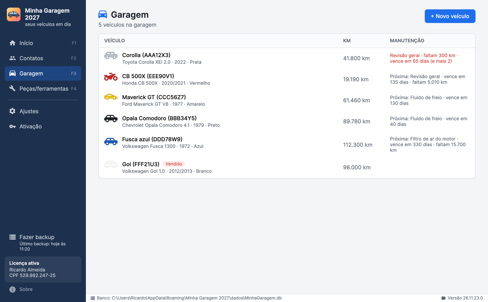
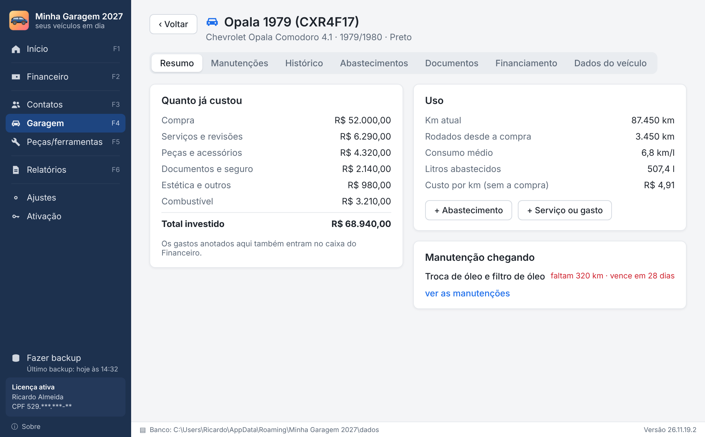
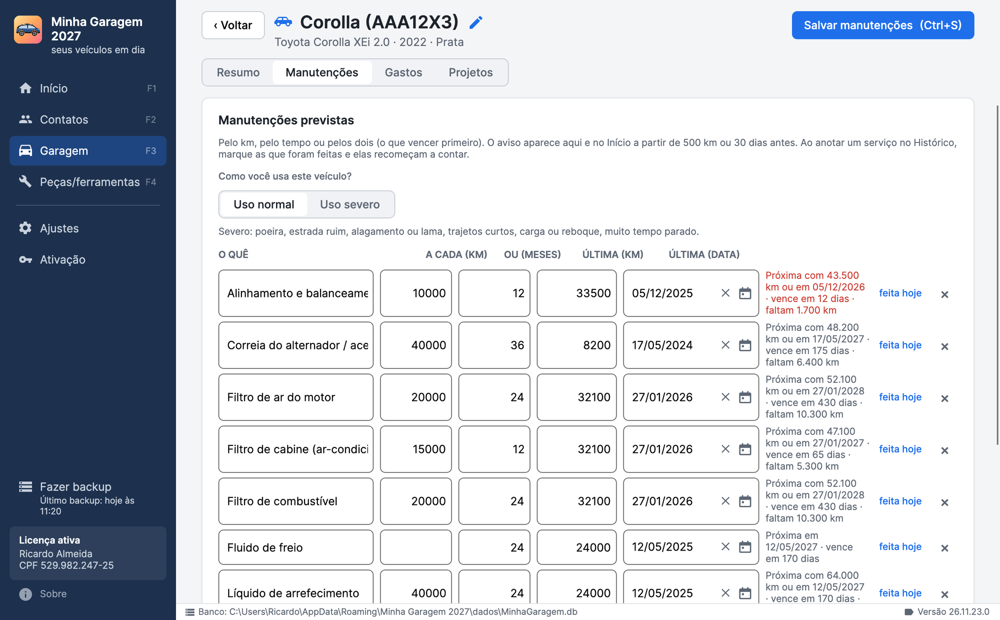
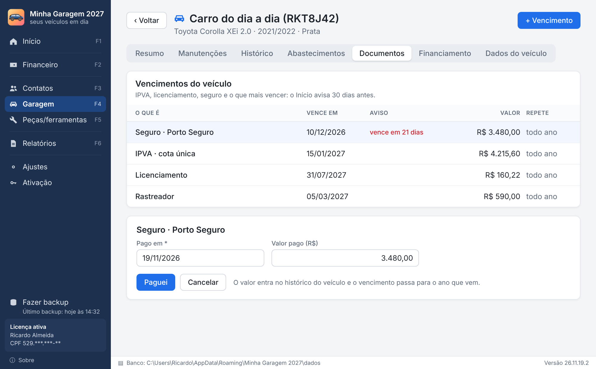
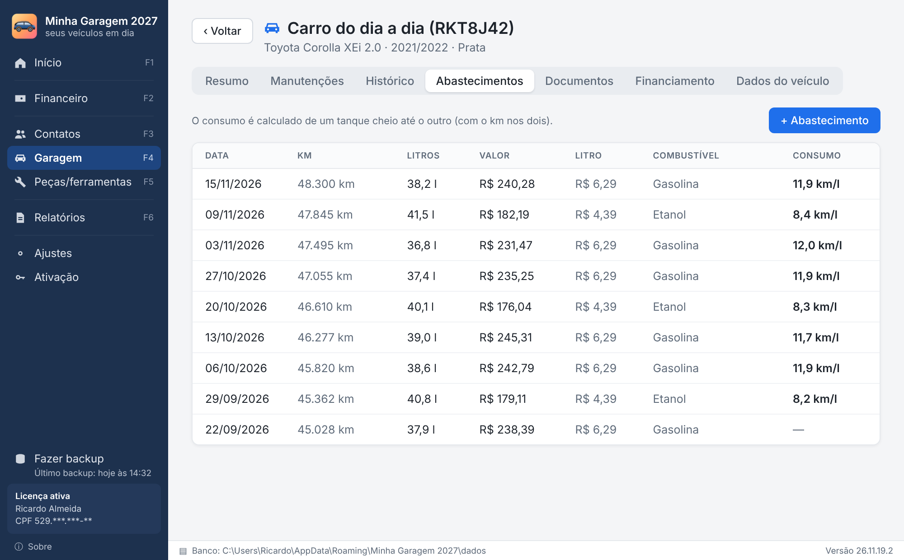
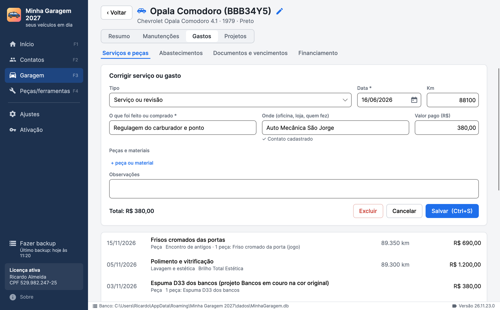
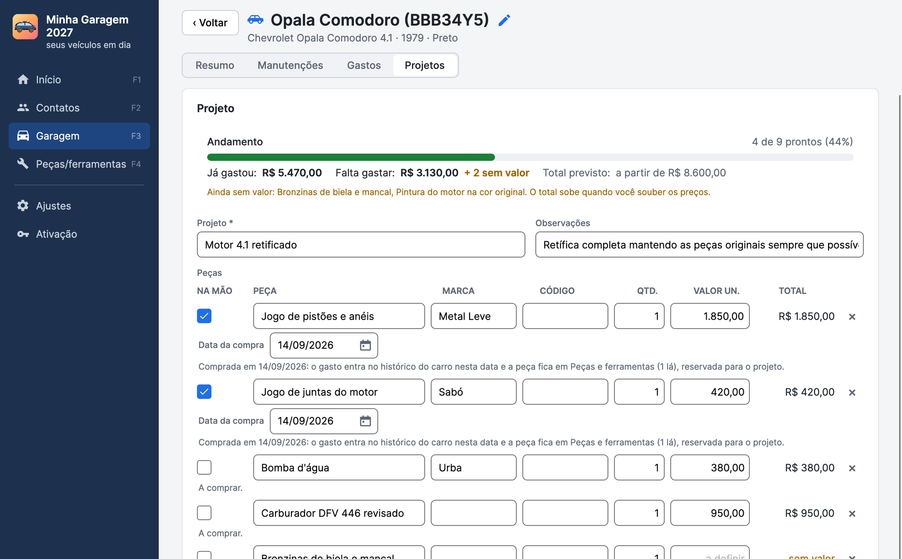
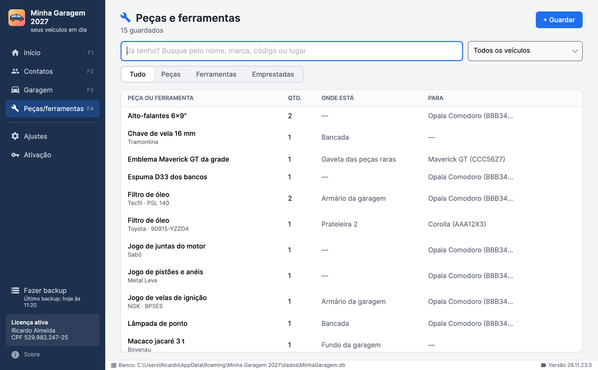

Financiamento
Banco, entrada, valor financiado e parcelas (até 120). Pague as parcelas na ficha do veículo e veja as pagas, o saldo, a próxima e os juros. A próxima parcela aparece no Início.
Anote abastecimentos, serviços, peças, documentos e projetos. O programa avisa a troca de óleo, correias e fluidos pelo km ou pela data, lembra o IPVA, o licenciamento, o seguro e a CNH, calcula o consumo e mostra quanto cada veículo gastou no mês e no ano.
Do carro do dia a dia aos antigos e de coleção · No computador e no celular · Funciona sem internet









Banco, entrada, valor financiado e parcelas (até 120). Pague as parcelas na ficha do veículo e veja as pagas, o saldo, a próxima e os juros. A próxima parcela aparece no Início.
Marca, modelo, anos de fabricação e do modelo, cor, placa, chassi, Renavam, compra e km. Campo livre para placa preta, motor original e restauração.
O histórico completo de cada veículo em PDF, para guardar, imprimir ou mostrar na hora de vender.
A oficina, o mecânico de confiança, a loja de peças e o despachante, com tipo de serviço, avaliação em estrelas, telefone, WhatsApp com um clique e os serviços que cada um já fez nos seus veículos.
Backup automático todo dia e antes de cada atualização. Backup com um clique (Ctrl+B) para o pen drive ou a sua nuvem.
Escolha a cor do programa e do menu. A mesma cor sai no histórico em PDF.
As correções e ajustes da Minha Garagem 2027 vêm com a compra: o programa avisa quando sai versão nova. Seus dados continuam onde estão.
Um programa só para os seus veículos, sem nada de empresa no meio: abre direto na garagem.
Revisões, peças originais, documentos e a história de cada um, guardados num lugar só.
Troca de óleo, pneus e revisões sem esquecer, e o consumo de cada tanque.
Quantos veículos quiser na mesma garagem (carro, SUV, caminhonete, moto, caminhão, trator ou jet ski), cada um com a sua ficha e a sua conta.
Combustível, manutenção, seguro, IPVA e financiamento, somados por veículo.
Para oficina, estética automotiva, lava car ou motorista de aplicativo, conheça o MyWork 2027: clientes, ordens de serviço, vendas e financeiro do seu negócio.
Como os dados ficam só no seu computador, ninguém mais tem uma cópia deles: nem nós, nem uma nuvem. Se o computador estragar, for roubado ou formatado sem cópia, os dados se perdem. As cópias automáticas ficam no mesmo computador; por isso, use com frequência o botão Fazer backup do menu (Ctrl+B) e guarde a cópia num lugar seguro fora dele, como um pen drive, um HD externo ou a sua nuvem.
Escolha o seu computador ou celular. Sem chave, o programa funciona em modo de demonstração, com 1 veículo e até 15 registros de cada tipo.
Os dados ficam só no seu computador ou celular e guardar a cópia de segurança num lugar seguro é responsabilidade sua. Saiba mais
A primeira versão da Minha Garagem 2027 sai em breve. Volte daqui a pouco!
Versão atual: · Qual Mac eu tenho? · Como instalar no celular
Gostou do teste? Comprar no Mercado Livre
No computador, precisa de 4 GB de memória (RAM), 300 MB livres no disco e tela de pelo menos 1024 × 768. No celular, Android 8 ou mais novo. Não precisa de internet para usar.
A Minha Garagem é só para os seus veículos: abre direto na garagem, sem clientes, ordens de serviço, vendas nem MEI. O MyWork é para quem trabalha por conta própria e tem vários ramos (oficina, estética automotiva, lava car e outros). São programas separados, com chaves separadas: a chave de um não ativa o outro.
Pode. Cada um tem a sua instalação, o seu atalho e a sua pasta de dados, e um não mexe no outro.
Funciona no Android (8 ou mais novo), com o arquivo baixado aqui do site. A mesma chave da Minha Garagem 2027 ativa o computador e o celular. No iPhone ainda não, mas está nos planos.
Abra esta página no celular, toque em Celular Android e abra o arquivo baixado. Como o programa não vem da Play Store, o Android pede para permitir a instalação: toque em Configurações, ligue Permitir desta fonte e volte para instalar. As correções da edição chegam pelo próprio programa.
Não sozinhos: cada aparelho guarda os seus dados, sem nuvem no meio. Para levar tudo de um para o outro, faça o Fazer backup em um e restaure a cópia no outro.
Não. A Minha Garagem funciona sem internet e guarda tudo no seu computador ou celular. A internet só é usada, se estiver disponível, para buscar o endereço pelo CEP e para avisar quando sai versão nova.
Pode, sem limite de tempo. Sem a chave de ativação, o programa funciona em modo de demonstração com 1 veículo, todas as telas abertas e até 15 registros de cada tipo (serviços e gastos, abastecimentos, documentos, financiamentos, peças e ferramentas). Ao ativar, você cadastra quantos veículos e registros quiser e nada do que já anotou se perde.
Quantos quiser. Veículo vendido sai da garagem, mas o histórico dele continua guardado.
Pelo maior km entre o que você informa na ficha, nos abastecimentos e nos serviços. Quanto mais você anota, mais certo fica o aviso das manutenções.
Pelas mensagens da compra no Mercado Livre. A chave fica vinculada ao seu CPF, e o seu nome aparece no programa.
Clique no menu Apple () e em Sobre Este Mac. Se aparecer Chip Apple M1, M2, M3 ou M4, baixe a versão Apple Silicon. Se aparecer Processador Intel, baixe a versão Intel.
Num banco de dados no seu próprio computador, e em nenhum outro lugar. O programa faz uma cópia automática todo dia, mas ela fica no mesmo computador: se ele estragar, for roubado ou formatado, ela vai junto. Para não perder nada, use o Fazer backup com frequência, guarde a cópia fora do computador (pen drive, HD externo ou a sua nuvem) e, se precisar, restaure em outro computador.
Você. A Minha Garagem não envia seus dados para nenhum servidor e nós não temos acesso a eles, por isso não conseguimos recuperar nada que se perca. Manter cópias de segurança atualizadas em um lugar seguro, fora do computador, é responsabilidade de quem usa o programa.
A compra da Minha Garagem 2027 inclui as atualizações de correção e ajuste desta edição. A edição do próximo ano (Minha Garagem 2028) é um produto novo, vendido à parte, e não vem com esta compra. A chave de ativação vale para a edição comprada.
Quando sai uma correção da Minha Garagem 2027, o programa avisa na tela. No computador, ele se atualiza com um clique (ou é só baixar e instalar por cima); no celular, abre a página para baixar a versão nova e instalar por cima. Seus dados continuam onde estão, e uma cópia de segurança é feita antes.
A chave fica no seu CPF, não no computador. Instale a Minha Garagem no computador novo, restaure a sua cópia de segurança e ative com a mesma chave.
No Windows, se aparecer "O Windows protegeu o computador", clique em Mais informações e em Executar assim mesmo. No Mac, clique no programa com o botão direito e em Abrir; no macOS 15 ou mais novo, vá em Ajustes do Sistema > Privacidade e Segurança > Abrir Mesmo Assim.
Outra dúvida ou algum problema? Escreva para o suporte: clique para ver o e-mail